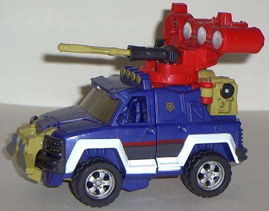
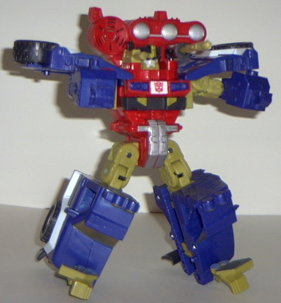
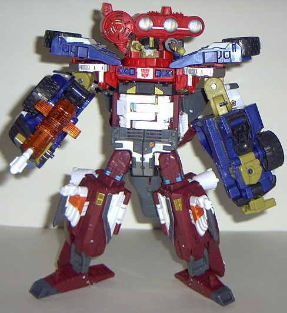

Ironhide
(Energon)
Ironhide
(Energon)


Allegiance
: Autobot
Size
: Mega
Difficulty of Transformation
: Easy
Difficulty of Powerlinx Transformation
:
Medium
Color Scheme
: Red, dark sparkly
blue, tan, charcoal black, and some silver, white, dull gold, dark red,
dark gray, and dull sky blue
Powerlinx ports
: 1
Rating
: 7.8
Vehicle mode is a futuristic
SUV with a big gun platform on the top. Although I don't think this mode
is as bad as it's made out to be by the majority of the Transfandom, I
still think it's got a bit to go to be considered "good". Its main problem
is that it's far too "kiddy" in its proportions- the SUV is too wide proportionally,
too stubby, and has a lack of good mold detailing most parts. Another rather
obvious problem is that the robot head is pretty apparent- there's only
a helmet pulled down over the eyes, and the rest of the head is just...
there... in between the two guns. Unless you're looking at the turret at
a head-on view, it's not too bad, but Hasbro really should have put a bit
more effort into hiding the head. The robot fists are also a bit apparent
if you look at Ironhide from the rear, but otherwise there's no extras
in this mode. There's oodles of paint detailing on this toy, which is a
definite plus. Another cool (and unnecessary) feature is that the front
side windows are open, and inside are molded seats! The rear side windows
are just regular plastic, and although one is painted, Hasbro decided to
forego painting the other one to put the gold Autobot Powerlinx symbol
there instead. I realize they had to put it somewhere, but that particular
window looks pretty prototypish without any real paint... Ironhide's sound
effects are pretty good- rotate his turret and a "chink-chink" mechanical
sound is made, and if you push back on the gun to the left of his head
(thereby firing it), a "firing" sound is emitted. Both generally don't
go off unless you move the parts you're supposed to, but a few times when
I was moving Ironhide's large legs in robot mode, his rotating-turret sound
went off for some reason. It's nothing that annoys you enough to take out
the batteries, though. (The gun to the right of Ironhide's head has a trigger,
but I'm not sure why it's there- it doesn't do anything.)
I love Ironhide's robot
mode. The colors, the look, just everything meshes together so well. He
definitely looks like the "young tough guy" that he is in the cartoon and
comic continuities, and he's very sturdy, too- this toy's gonna last a
loooong time. The shoulder pads tend to break off during Powerlinx transformation
sometimes, but that's pretty much it- everything else stays on like it's
all one solid piece. I especially like the exquisite detail put into his
chest and waist- it's very solid, multi-layered, and with more than enough
paint apps. The arms are nice and sturdy, too. His right arm has his only
Powerlinx port on the back of it, while his left arm has his spark crystal
on its backside. They're pretty nice places for one, but I think a toy
this big should have more than just one piddly Powerlinx port... Anyways,
his lower legs I probably have the biggest problem with, but that's not
to say they're bad. They just stick out too far at the knees, and make
it look like he couldn't run without tripping often. His feet, while kinda
skinny, are adequate. And don't worry about articulation, Ironhide's got
you covered- he can move at the head, shoulders (at two points), elbows
(at one point, but they're on ball joints), hips (at two points), and knees
(at two points).


As the top half of a
Powerlinx robot, I think Ironhide is... okay. His hands are just flat brown
pieces on the front of his huge lower robot mode legs, but other than that
he makes a pretty convincing robot (which looks a heck of a lot like the
top half of his robot mode), and his extras hide themselves nicely behind
his back.
As the bottom half,
Ironhide starts to lose it. Although his large legs are pretty convincing
(albeit a little on the long side) if you ignore the fists on the knees,
the entire top half of his robot mode just hangs off his backside as an
extra. It's very hard to ignore, especially since the balljoint it's on
swings a bit and his robot mode arms don't really go anywhere.
Energon Ironhide is a
decent, if not spectacular, figure. His vehicle mode is a little kiddy,
but it has its high points, and Ironhide's robot mode is just great pretty
much all around. His Powerlinx modes are only so-so, but those don't affect
the score as much as his regular modes. Mildly recommended.
Ironhide Bio
:
MOTTO: "If trouble doesn't find me,
I'll find it!"
Ironhide is a young and reckless recruit.
He is a good fighter but lacks the discipline and experience of his Autobot
elders. Able to powerlinx with Jetfire, Ironhide can crunch Decepticon
metal with the best of them. His powerful laser cannon is a feared weapon
by his enemies. With a little guidance, he is sure to become seasoned warrior.
Strength: 9.0
Intelligence: 7.0
Speed: 6.0
Endurance: 8.0
Rank: 5.0
Courage: 8.0
Fireblast: 8.0
Skill: 7.0
Review by Beastbot
Back to Transformers:
Energon Index